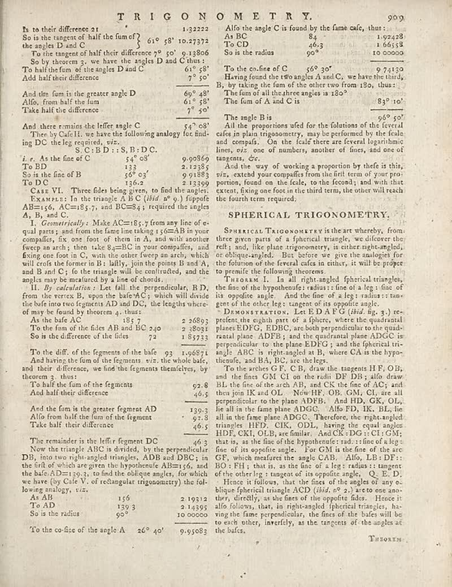

page-1580-e0bdcd3f241e.jpg

Page ID: britannica:309f765b1ecc83e0a7f7762e44b4a927a7555443:train:1580
Running head:
Image SHA-256: e0bdcd3f241e27ff8e01ab1d9d2d473bc5373e9ac54cdbd1887cf0407fbf0eaa

(untitled) [?]
\begin{tabular}{cc}
b to their difference 21 & 1:32222\\
So is the tangent of half the fum of? & 84 & 1.92428\\
the angle ID and C & 610 58' 10.27372\\
To the tangent of half their difference 79 50' & 9.13806\\
So by theorem, we have the angles D and C thus; & \\
To hold the fun of the angles I D and C & 611 58'\\
Add half their difference & 70 50'\\
And the fum is the greater angle D & 69o 48'\\
Alfo, from half the fum & 61o 58'\\
Take half the difference & 70 50'\\
And there remains the lifter angle C & 54°08'\\
Then by Cafel II, we have the following analogy for find ing On the leg required, viz. & S.C. B D :: S, B. D C.\\
I. As the fine of C & 54°03' 9.90860\\
To BD & 133 & 2.12385\\
So is the fine of B & 56°03' 9.91883\\
TOO & 150A 1.13590\\
Case VI. Three files being given, to find the angles. & \\
Examle: In the triangle A B C ((bit a 9) ) fuppfe AB=13, AC=185 7, and BC=B4 y required the angles & \\
A, B, and C; To the triangle will be confucted, and the angles may be incurred by a line of clouds. & \\
II. By undertaking: Let fall the perpendicular, BD from the vertex B, upon the bafe’AC; which will divide the one into two segments AD and DC, the lengths where of may be found by theorem 4, thus: & \\
As the bafe AC & 185 7 & 2.26893\\
To the form of the sides AB and BC 240 & 2.8034\\
So is the difference of the files 72 & 1.85733\\
To the diff, of the figures of the bafa 93 & 1.0687i\\
And having the fum of the fragments, viz. the whole bafs, and their difference, we find the fragments themselves, by theorem 3, thus: & \\
To half the fum of the fragments & 92E-6\\
And half their difference & 46-5\\
And the fum is the greater fragment AD & 139-7\\
Allo from half the fum of the fragment & 52-8\\
Take half their difference & 46-5\\
The remainder is the lifter fragment DC & 46-3\\
Now the triangle ABC is divided, by the perpendicular DB, into two right angles triangles, ADB and DRG; in the lift of which are given the hypothecule AB=156, and the bafe AD=130-3, to find the oblique angles, for which we have (by Cafel V, of rechargular trigonometry) the fol-lowing analogy, viz. & \\
As AB & 159 & 2.10312\\
Tier AD & 193 & 2.1359\\
So is the radius & 90° & 1.00000\\
To the co-fise of the angle A & 26° 40° & 9.95083\\
\end{tabular}
Alfo the angle C is found by the fam cafe, thus:\\
As IB 84 & 1.92428\\
To CD & 46:3 & 1.66518\\
So is the radius & 90° & 10.0000\\
To the co-fine of C & 56° 30° & 9.74130\\
Having found the two angles A and C, we have the third, B, by taking the time of the other two from 150, thus: & \\
The fum of all the three angles is 180° & The fum of A and C is & 83° 10°\\
The angle B is & 96° 50° & \\
All the proportions ufd for the foliations of the fever et cafes in plain trigonometry, may be performed by the final and compd. On the leaf there are several logarithmic lines, viz. one of numbers, another of fines, and one of tangents, éx. & \\
And the way of working a proportion by these is this, viz., extend your compaifles from the frit term of your pro portion, found on the feale, to the second; and with that extent, flying on foot in the third term, the other will reach the fourth term required. & \\
SPHERICAL TRIGONOMETRY & \\
\end{tabular}
SPHERICAL TRIGONOMETRY is the art whereby, from three given parts of a spherical triangle, we discover the refl; and, like plane trigonometry, is either right-angled, or obliquely-angle]. But there we give the analogies for the foliation of the Several cases in other, it will be proper to premile the following theorems.
Taraxad. I. In all right-angled, spherical triangles, the fino of the hypothecial’s radius : fine of a leg - fine of its opposite angle. And the fine of a leg: radius : tan- gent of the other the tangent of its opposite angle.
Demonstration, Let E DA X (this id, fig. 1) re-prefent the eighth part of a Sphere, where the quadratil plane EDFG, DRG, can both prepened to the quadri-plane EDFs; and the quadratil plane ADG is perperendicular to the plane EDFG; and the spherical tri- angle ARC is right-angle as B, where CA is the hypo-theme, and BA, BC, so the legs.
To the arches GF, C B, draw the tangents HF, OB, and the finses CM G and the radii DP DB; and draw list the fine of the arch AB, and Ct the fine of AC; and then join IK and OL NowHF, OB, GM, CL are all perpendiculor to the plane ADDB. And HD, GK, OL, the all in the fans plane ADGC. Therefore, the right-angled triangles HHD, CKK, ODL, having the equal angles HDF, CKK OLB, see further. And CK-NOM CI COM; that is, as the fine of the hypothetic: rad:: fine of a leg - fine of its opposite angle. For OM is the fine of the arc GC, which therefore the angle CAB. Both, LB DF+; BO: FH; that is, as the fino of a leg: radius : tangent of the other leg: tangent of its opposite angle, J, E. D. Hence is follows: that the first of the angles of any ex-blique spherical triangle ACD (_this_, o^2), letto one ano- they, directly, as the fins of the opposite fides. Hence it allo follows, that, in right-angled- spherical triangles, having the fame perpendicular, the fino of the bafs will be to each other, inverify, as the tangents of the angles at the bafs.
Matched article: Outline of geometry (Wikipedia, revision 1318177804, re-rank score -3.8125) · comparison